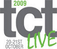

|
 02 - 05 Aralýk 2009 > EuroMold, World Fair for Moldmaking and Tooling, Design and Application Development 02 - 05 Aralýk 2009 > EuroMold, World Fair for Moldmaking and Tooling, Design and Application Development
Ülke / Þehir: Almanya /
Frankfurt
Yer: Exhibition Center, Frankfurt/Main
The whole process chain "From Design to Prototyping to Series Production" is represented at EuroMold. A unique fair concept that closes the gap between industrial designers, product developers, producers, suppliers, and end-users. EuroMold shows methods for a quicker, more economical, and more efficient development and production of new products - a factor of increasing importance within the demands of the modern economy.
Since its beginnings in 1994, EuroMold has grown in exhibitors, in trade visitors, in internationality, in variety, in exhibition space, year after year. EuroMold 2008 hosted 58,842 visitors from 87 countries. That means, the proportion of international attendees has grown in comparison to previous year's EuroMold.
In total EuroMold 2008 greeted 19,535 international visitors, a quota of 33.2 % of all attendees. The rate of non German visitors grew by 4.4 %. With regards to EuroMolds specific sectors most attendees came from Moldmaking and Tooling (15.7 %), Patternmaking and Prototyping (8.3 %), Engineering (8.1 %), Design (6.1 %), Tools (5.8 %), Machine Tools (5.6 %), Materials (5.5 %), Soft- and Hardware (5.3 %), and, Rapid Prototyping & Tooling (5.2 %).
1,600 exhibitors from 40 countries and about 60,000 trade visitors are expected to come for EuroMold 2009 which will show the latest trends in manufacturing and product developments on approximately 75.000 sqm exhibition space.
Already shortly after the successful completion of EuroMold 2008 many re-registrations and requests for stand enlargements indicated that EuroMold 2009 again will be an innovative and technological high-class event. Despite the financial crisis the feedback from our exhibitors is very strong.
At EuroMold 2009 the special topic Thermoforming, an essential process for production of plastics details, will be presented for the first time.
Daha
fazla bilgi için: www.euromold.com
Not: Euromold - TurkCADCAM.net iþbirliði kapsamýnda, TurkCADCAM.net logosu Euromold web sayfalarýnda yer almaktadýr.
17 - 20 Kasým 2009 > Midest 2009 - The world's leading industrial subcontracting show
Ülke / Þehir: Fransa / Paris
Yer: Paris Nord Villepinte Exhibition Centre
Midest is the sourcing platform for international suppliers of industrial subcontracting.
It is a show for the forging of partnerships and monitoring technology, serving manufacturers, component suppliers and assemblers, who are looking for face to face meetings with providers of solutions in metal working, plastics, electronics and industry services. Midest places the men and women of such businesses at the heart of exchanges designed to get them working together.
- MIDEST: The world's leading industrial subcontracting show;
- An average of 1,800 exhibitors occupying nearly
- 50,000 sqm of exhibition space
- 37,640 professionals from all sectors of activity
- Foreign exhibitors from 29 countries account for 39% of the total
- Foreign visitors from 54 countries account for 14% of the total
- Over 50 foreign organizations are active partners of Midest
MIDEST coverage:
- Metal Processing
- Screw Cutting, Machining, Special Machines
- Finishing, Surface Treatments, Thermal Treatments
- Industrial Fasteners
- Forging, Foundry, Fabrication
- Metal Cutting
- Semi-Finished Products
- Plastic/ Rubber /Composite Material Processing
- Electronics/Electricity
- Microtechniques
- Industry Services
- Engineering, analysis
- Design aid
- Industrial design
- Research & development
- Quality
- Industrial maintenance
Daha
fazla bilgi için: www.midest.com
03
- 07 Kasým 2009 > Metalworking and CNC Machine Tool Show 2009
Ülke / Þehir: Shanghai / Çin
Yer: Shanghai New International Expo Center
Since its inauguration in 1994, Metal Working China has been successfully held for 8 times. This trade show has experienced rapid growth and by now become the most efficient and internationally recognized business event in the entire metal working china sector of South-East China.
Metalworking and CNC Machine Tool Show 2008 saw a total of 432 exhibitors displaying their latest products and solutions on 35,000 sqm indoor space. The show has attracted overall 93,500 professional visitors to attend the trade shows, they are from various areas like automobile industry, defense and ministry industry, shipbuilding industry, aviation industry, Die &Mould industry, electric power and electronic industry, general machinery and so on, the great appeal is embodied in the presence of many pavilions organized by large user companies and associations.
In 2009, Hannover-Messe International GmbH, Hannover Fairs Shanghai Co., Ltd., Shanghai World Expo (Group) Co., Ltd. will co-organize Metalworking and CNC Machine Tool Show and form a more powerful alliance. We will try our best to gain the support from professional associations and government agency and to meet the equipment demand of the machine tool consumers with the target of developing our show to the one with top quality in China machine tool sector.
Daha
fazla bilgi için: www.metalworkingchina.com
Not: TurkCADCAM.net ile yapýlan iþbirliði kapsamýnda, MfgTR.com logosu, bu fuarýn tanýtýmýna destek verenlere ait "Media Partners" sayfasýnda yer almaktadýr.
20
- 21 Ekim 2009 > TCT LIVE 2009 Software & Technology For Product Development & Manufacturing:
Ülke / Þehir: Ýngiltere / Coventry
Yer: Ricoh Arena
Taking place annually, TCT successfully draws together everyone involved in the concept, design, manufacturing and specification functions. Designers, prototype specialists, technical directors, development engineers, product managers, purchasing engineers, design directors, chief engineers, sub-contractors, consultants and other manufacturing professionals all attend TCT searching for the latest technologies to help them reduce time to market.
- Meet over 150 leading suppliers in the marketplace face to face
- See the latest machines and technologies LIVE
- Source new suppliers and build relationships with existing partners
- Learn how to implement new technologies that are available
Exhibits cover the vast range of RP&M machines and technologies. In addition, the exhibition brings together major players from the sectors of Inspection, Scanning and Digitizing, CAD/CAM/CAE Software and Materials all of whom showcase their latest offerings presenting the perfect opportunity for the prospective visitor to appraise all of the latest technologies on the market. Service providers from all the sectors are also on hand to demonstrate the most effective ways of utilising the technologies available.
The world renowned TCT Conference is characterised by high quality presentations. This high level conference drew delegates from over 20 different countries in 2008. Following on from the success of 2008, these highly oversubscribed free seminar sessions, presented by Graham Tromans will give newcomers to "rapid" technologies the opportunity to get up to speed as fast as possible and to be aware of how they can best access them.
Building upon the success of 2008, TCT Live and MM Live will be running a one day Technology for Jewellery programme. Last year's seminar attracted jewellery and watch-making professionals, both big users of micro technologies, from all over the UK and Ireland.
NEW for 2009, this full day seminar programme will highlight the breakthroughs in Metrology, highlighting applications with case studies and demonstrations.
Another NEW addition for 2009, this day of seminars will look at the state of play in the CAD/CAM/CAE sector, highlighting the latest trends and new applications from the leading vendors.
Through the co-location with the second edition of this highly successful MM Live (The Micro, Precision and Nano Manufacturing Event). A series of free seminars seating over 140 manufacturing professionals. Running on both days, these seminars will cover all of the key technologies employed in making and verifying precision micro components.
Daha
fazla bilgi için: www.tctshow.com
05 - 10 Ekim 2009 > EMO MILANO 2009 "machine tool world exhibition"
Ülke / Þehir: Ýtalya / Milan
Yer: Fiera Milano
Created in 1975, EMO, which takes place every two years, testifies the evolution of the world of “metal machining”, encouraging, by a meeting and exchange of views between manufacturers and end users, the definition of more and more advanced technical solutions.
By proposing the qualitatively highest synthesis of the solutions set up by the worldwide machine tool industry, EMO has affirmed its role as world showcase of technological innovation: a meeting occasion, alternatively hosted in Hanover and in Milan, on which the attention of the operators belonging to the whole world manufacturing industry is concentrated.
Metal forming and metal cutting machine tools, machines for welding, for thermal and surface treatments, robots, automation hardware and software, assembling, tools, parts, components, accessories, metrology, quality control, systems for safety and environmental protection...
All the ways, even the most difficultly definable ones, by which the “know-how” of the sector universe can find a quite appropriate expression, are presented at EMO, making the exhibition, promoted by CECIMO, European Committee for the Co-operation among Machine Tool Industries, the most eagerly awaited event for the operators of the worldwide manufacturing industry.
Daha
fazla bilgi için: www.emo-milan.com
Not: MÝB (Makina Ýmalatçýlarý Birliði) bu Fuar’ýn Türkiye temsilcisidir.
06 - 10 Ekim 2009 > 4th International Conference on Advanced Research in Virtual and Rapid Prototyping (VRAP 2009):
Ülke / Þehir: Portekiz, Leiria
Yer: Centre for Rapid and Sustainable Product Development, School of Technology and Management, Polytechnic Institute of Leiria
The International Conference on Advanced Research in Virtual and Rapid Prototyping (VR@P), organised every two years since 2003, has been designed to be a major forum for the Scientific exchange of multi-disciplinary and inter-organisational aspects of virtual and physical prototyping and related areas. VR@P ims at making a significant contribution for further development of these fields. In 2007, as in the two previous editions, we gathered participants from more than 20 countries. The Conference carries out a full paper submission.
Conference Topics:
Design
Biomimetics
Design for Bio Manufacturing
Design for Micro Manufacturing
Design for Rapid Manufacturing
Design for Sustainability
CAD and 3D data acquisition technologies
3D digitising
BioCAD
Fast geometrical modelling schemes
Haptic CAD
Image-based modelling systems
Metrology
nD Modelling
Photogrammetry
X-ray tomography and NMR
Concurrent engineering
Collaborative decision-making
Concurrent product development
Frameworks for information sharing
Virtual environments and simulation
Intelligent computing
Internet-based product development
Knowledge based systems
Simulation and optimisation of manufacturing processes
Virtual and augmented reality
Virtual engineering and manufacturing
Virtual enterprise engineering
Web-based information systems |
Materials
Advanced rapid prototyping, tooling and manufacturing materials
Biomaterials
Ceramics
Composites
Liquid Crystals
Metals
Polymers
Rapid tooling and manufacturing
Conformal cooling
Small batch production methods
Systems for the direct manufacturing of metallic and ceramic components
Advanced technologies
Advances on material removal and addition technologies
Hybrid systems
Microfabrication
Nanofabrication
Research on new additive and non-additive technologies
Applications
Architecture and art
Aerospace industry
Automotive industry
Biomedical technology
Jewellery
Model-making and tool-making |
Daha
fazla bilgi için: www.vrap.ipleiria.pt
 08 - 09 Temmuz 2009 > 4th International Conference on Rapid Manufacturing 08 - 09 Temmuz 2009 > 4th International Conference on Rapid Manufacturing
Ülke / Þehir: Ýngiltere / Leicestershire
Yer: Holywell Park Conference Center, Loughborough University
Now in its fourth successful year, the International Conference on Rapid Manufacturing (RM) is one of the world's only conferences focused solely on the application of 'end use parts', made using additive layer manufacturing technologies. Hosted by the world leading "Rapid Manufacturing Research Group" at Loughborough University, the International Conference on RM is attended by over 150 delegates and speakers from around the world. The event provides a two day showcase of invited speakers, including the very best in both academic RM research activity and commercial RM applications. The event also plays host to a parallel technology and materials exhibition supported by leading RM systems vendors exclusively for conference delegates.
Conference programme:
The conference is aimed at both industrialists and academics. The conference will be equally of interest to those already involved in Rapid Manufacturing, but also those looking to engage with this exciting new technology. The conference will cover process and materials issues, design opportunities, management and organizational issues and industrial applications, making the conference of relevance to engineers, designers and business managers, as well as academics and researchers and RM materials and system developers
Daha
fazla bilgi için: www.rm-conference.com |